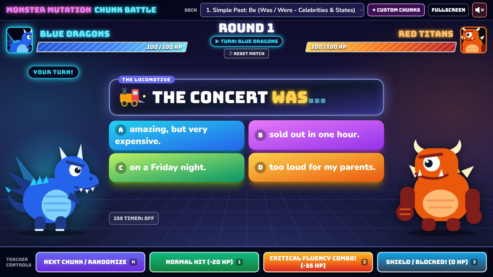
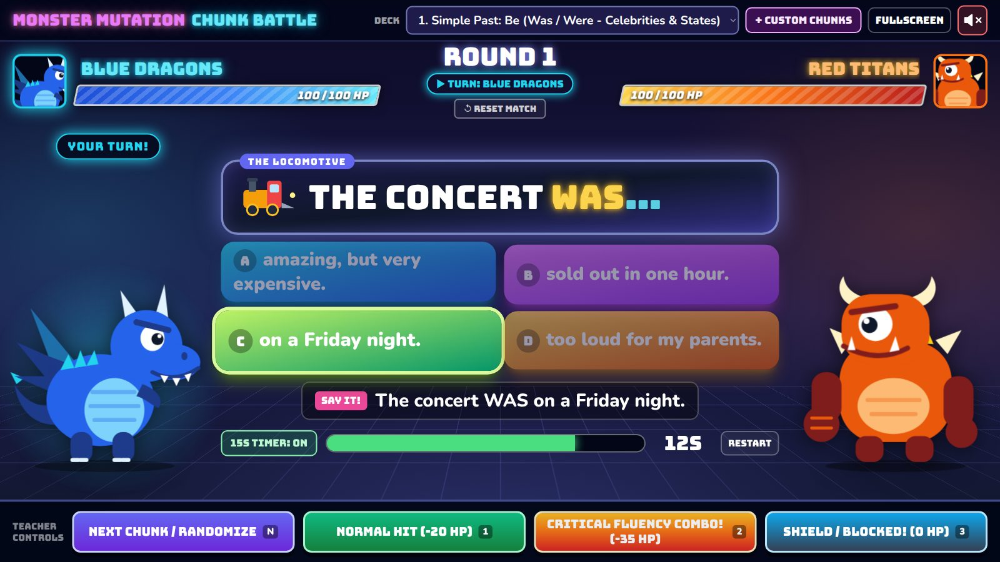
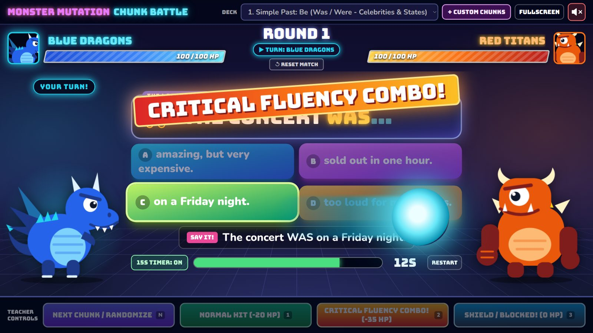
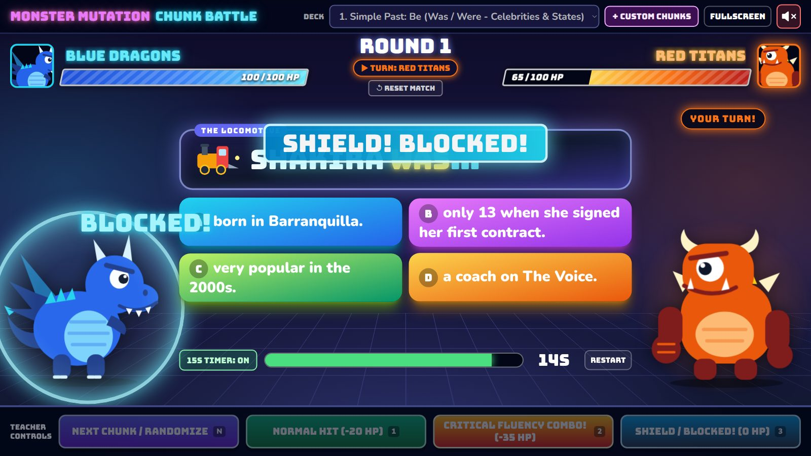
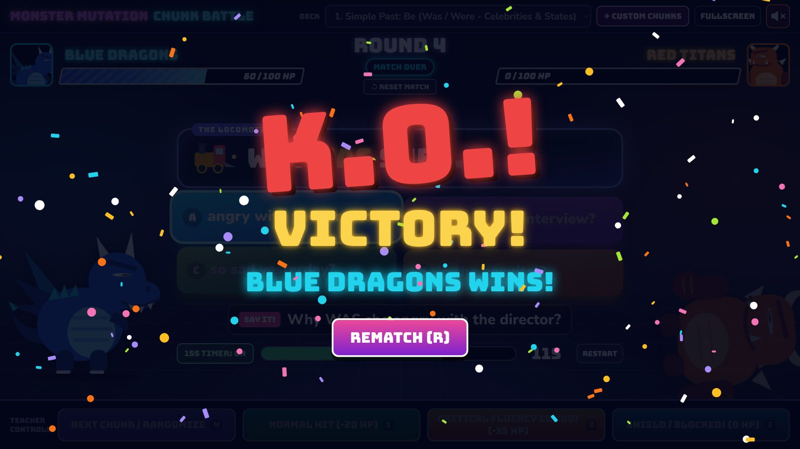
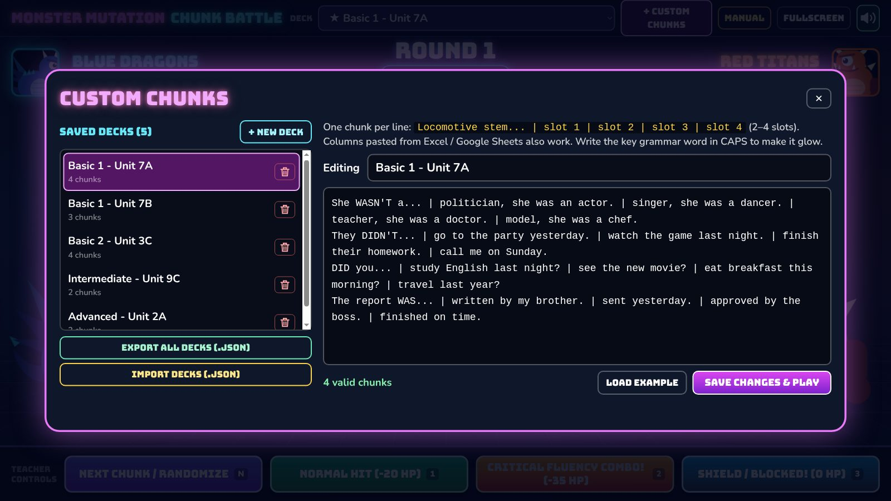

Juego arcade de speaking y gramática para clases de inglés (ESL). Dos equipos, dos monstruos y una sola regla: ¡habla con fluidez para atacar!

Versión 1.0 · Noviembre 2026
Monster Mutation: Chunk Battle es un juego de combate por equipos que se proyecta en la TV o el video beam del salón mientras el profesor lo controla desde el portátil. Cada turno, el equipo activo recibe un chunk (bloque de lenguaje) para completar en voz alta. Según la calidad y la fluidez de la respuesta, el profesor decide si su monstruo ataca, hace un combo crítico o si el rival bloquea el ataque.
Es la tarjeta grande del centro: el inicio fijo de la estructura, por ejemplo She WASN'T a..., They DIDN'T..., The report WAS.... La palabra gramatical clave aparece en MAYÚSCULAS y brilla en amarillo.
Son las 4 burbujas de colores (A, B, C, D) con terminaciones posibles. El estudiante elige una, la "engancha" a la locomotora y dice la oración completa, sin leer palabra por palabra.

| Zona | Qué contiene |
|---|---|
| Barra superior | Selector de mazo (DECK), botón + Custom Chunks, Fullscreen y el botón de sonido (mute/unmute) en la esquina. |
| HUD izquierdo / derecho | Avatar, nombre editable del equipo (haz clic sobre el nombre para cambiarlo) y la barra de vida (100 HP). Azul = Blue Dragons, Rojo/Naranja = Red Titans. |
| HUD central | ROUND (sube cuando ambos equipos jugaron), indicador TURN del equipo activo y el botón Reset Match. |
| Arena | Los dos monstruos. El equipo activo tiene un aura brillante y la etiqueta YOUR TURN!. En el centro están la Locomotora, los 4 vagones, la oración elegida y el timer. |
| Barra del profesor | Los 4 botones de control: Next Chunk Normal Hit Critical Combo Shield. |
| Botón | Tecla | Efecto | Cuándo usarlo (sugerencia) |
|---|---|---|---|
| Normal Hit (-20 HP) | 1 | El equipo activo ataca: el rival pierde 20 HP. Cambia el turno y carga un chunk nuevo. | La oración es correcta, aunque con una pequeña duda o algún detalle de pronunciación. |
| Critical Fluency Combo! (-35 HP) | 2 | Ataque especial con bola gigante, temblor de pantalla y banner. El rival pierde 35 HP. | Respuesta súper fluida: sin pausas, con buena entonación y rápida. Bonus si el estudiante agrega información extra. |
| Shield / Blocked! (0 HP) | 3 | El rival levanta un escudo y el ataque rebota. Nadie pierde vida y cambia el turno. | Error de gramática, se congeló, usó español, leyó palabra por palabra o se acabó el tiempo. |
| Next Chunk / Randomize | N | Carga otra Locomotora con otros vagones y cambia el turno, sin ataque. | Para "pasar" un turno, saltar un chunk que no conviene o calentar antes de empezar. |


Cuando un equipo llega a 0 HP aparece la pantalla K.O.! / VICTORY! con confeti, fanfarria y el nombre del equipo ganador. El monstruo perdedor cae y el ganador salta de alegría.
Pulsa REMATCH (o la tecla R) para una revancha. Reset Match reinicia la partida en cualquier momento: ambos equipos vuelven a 100 HP y a la ronda 1.

Cada mazo trae 12 locomotoras con 4 vagones cada una (48 oraciones posibles). Los chunks salen en orden aleatorio y no se repiten hasta agotar el mazo; los vagones también cambian de posición cada vez.
| # | Mazo | Ejemplos de Locomotora → Vagón |
|---|---|---|
| 1 | Simple Past: Be (Was / Were – Celebrities & States) | She WASN'T a... → politician, she was an actor. · Shakira WAS... → born in Barranquilla. · WERE you... → nervous on your first day? |
| 2 | Simple Past: Regular Verbs & Time Expressions | They DIDN'T... → watch the game last night. · DID you... → study English last night? · Two years ago, we... → moved to a new city. |
| 3 | Simple Past: Irregular Verbs (Actions & Travel) | We WENT... → to the beach last summer. · He LOST... → his luggage at the airport. · I SAW... → the Eiffel Tower at night. |
| 4 | The Passive Voice (Present & Past Business/Events) | The report WAS... → written by my brother. · Coffee IS... → grown in the mountains of Colombia. · WAS the contract... → signed by both companies? |
En los mazos incluidos, los 4 vagones son correctos. Lo que se evalúa es la producción oral: oración completa, pronunciación y fluidez.

Locomotora... | vagón 1 | vagón 2 | vagón 3 | vagón 4 She HAS NEVER... | been to Europe. | eaten sushi. | seen snow. | flown in a plane. HAVE you EVER... | met a famous person? | lost your phone? | won a prize? | broken a bone?
WAS, DIDN'T, HAVE) para que brille en la locomotora. Termina la locomotora con ...: el juego la une con el vagón para formar la oración completa. Si quieres trabajar la detección de errores, puedes incluir un vagón incorrecto a propósito.localStorage): no aparecen en otro computador, en otro navegador ni en modo incógnito, y se pierden si borras los datos de navegación. Para llevarlos a otro computador, pulsa Export All Decks (.json): se descarga el archivo monster-mutation-decks.json con todos tus mazos. En el computador del salón, abre + Custom Chunks y pulsa Import Decks (.json). La importación nunca sobrescribe: los mazos idénticos se omiten y, si ya tienes uno con el mismo nombre pero distinto contenido, el importado se agrega como "Nombre (2)".| Tecla | Acción | Tecla | Acción |
|---|---|---|---|
| 1 | Normal Hit (−20 HP) | A B C D | Seleccionar vagón |
| 2 | Critical Fluency Combo (−35 HP) | T | Timer ON / OFF |
| 3 | Shield / Blocked (0 HP) | M | Silenciar / activar sonido |
| N | Next Chunk / Randomize | F | Pantalla completa |
| R | Revancha (en la pantalla de victoria) |
Los atajos no funcionan mientras escribes en el nombre de un equipo o en la ventana de Custom Chunks. Haz clic fuera del campo para volver a usarlos.
Cada turno habla un estudiante distinto del equipo. Nadie puede repetir hasta que todos hayan hablado.
Para lograr un Critical Combo, el estudiante debe agregar una oración extra de su cosecha ("…and it was amazing because…").
Con locomotoras de pregunta (DID you..., WAS he...), un estudiante pregunta y otro de su equipo responde con short answer + información. Si ambos lo hacen bien: Critical.
Si el equipo activo recibe Shield, el otro equipo puede "robar" diciendo la oración correcta antes de su propio turno (el profesor puede premiarlo con un Normal Hit).
El equipo discute 10 segundos cuál vagón elegir, pero solo habla el "capitán" del turno. Fomenta la negociación en inglés.
Antes de la partida, usa Next Chunk varias veces y que todo el grupo repita en coro (choral drilling) sin atacar.
| Problema | Solución |
|---|---|
| No se escucha nada | Haz clic una vez dentro del juego (el navegador bloquea el sonido hasta la primera interacción). Revisa que el botón de sonido esté en verde (tecla M) y el volumen del portátil o la TV. |
| Se ve pequeño o con bordes negros | Pulsa FULLSCREEN o F. El juego mantiene la proporción 16:9; si la TV tiene otra proporción, aparecen bordes negros (es normal). |
| Los botones están grises | Hay una animación en curso (espera 1–2 s) o la partida terminó (pulsa REMATCH). |
| Desapareció mi mazo personalizado | Se guarda solo en ese navegador y computador. Pega de nuevo el texto que guardaste y pulsa Save & Play. |
| Las teclas no responden | El cursor está dentro del nombre de un equipo. Haz clic en la arena o en un espacio vacío. |
| Un chunk se repite mucho | No pasa dentro del mismo mazo: solo se repiten después de salir los 12. En un mazo personalizado corto, agrega más líneas. |
Monster Mutation: Chunk Battle · https://monster-mutation-esl.vercel.app · Manual v1.0